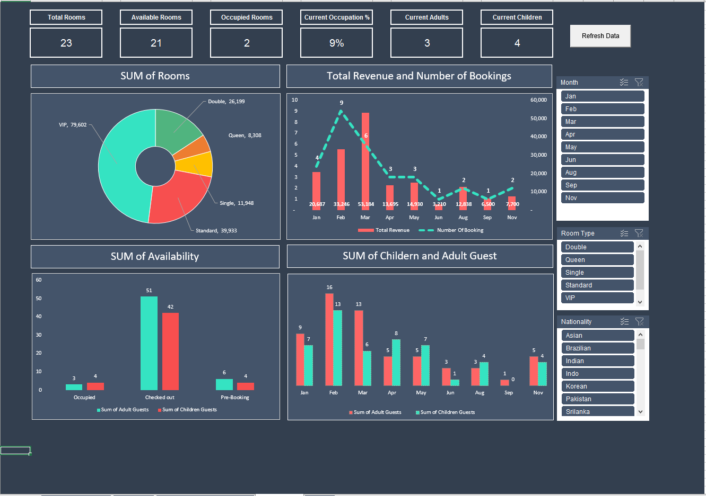
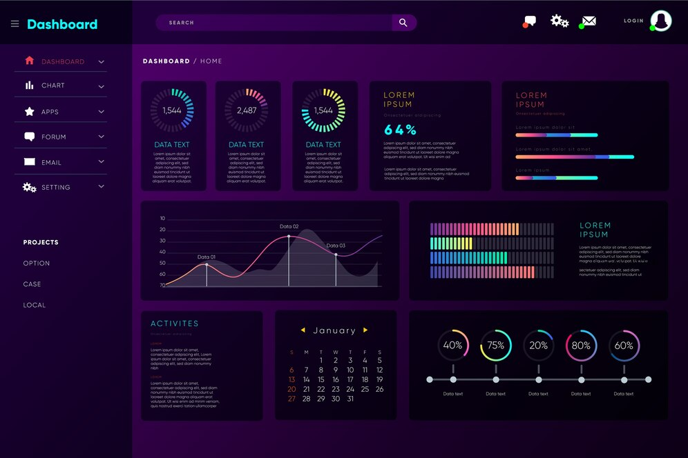

This section takes you to my Excel Projects.
These Excel Projects depicts Data Exploration, Data Cleaning and Data Visualization.
It also includes my Virtual Internship projects completed through Forage , an exposure on how Data Analytics & Consulting works in different companies.


This section showcases my Tableau Projects for Data Visualization.
The link takes you to my Tableau profile where you can view and access all my projects of Data Analysis and Tableau dashboards.
Any recommendations and suggestions are highly appreciated.

This SQL projects shows COVID-19 Data Exploration.
This project explores the COVID Data in the world, in terms of number of cases, vaccinations, population, location, continent, deaths, etc.
It has also a basic comparison of total cases, deaths, death and case percent comparison between Nepal and the United States.
The project focuses on applying Aggregate Functions, Group By, Order By, Having, Partition By, Temp_Tables, CTE, VIEW, JOINS, etc.
This Project is based on exploring and visualizing data for hotels having cancellation on bookings, lower revenue. Thus, generates report to solve these issues to generate higher revenue as the main concern of the hotels.
This Project applies the following steps.
1. Understand the Problem
2. Identify data to explore and analyze
3. Data Exploration and Cleaning
4. Analyze data to receive meaningful insights
5. Data Visualization Reports
Major Questions.
1. Identify variables affecting higher cancellations of booking
2. Make booking cancellations decrease
3. Insignts to make pricing and promotional decisions better
General HYPOTHESIS
1. Cancellations occur due to higher price
2. Longer waiting list results frequent cancellations
3. Reservations made from offline travel agents are higher
This section contains my Power BI Projects. Personally, I prefer Power BI than Tableau. Reason - simplicity in Data Preparation & Cleaning in PowerQuery,
DAX, Data Modelling and less need of manual efforts to produce a dashboard.
The reports easily can be extracted to pdf and slides, integrating conveniently with Microsoft products.

View here for all my other SQL Projects.
 View here for all my other Python Projects including Web Scraping, API Automation and Classification using Machine Learning models.
View here for all my other Python Projects including Web Scraping, API Automation and Classification using Machine Learning models.